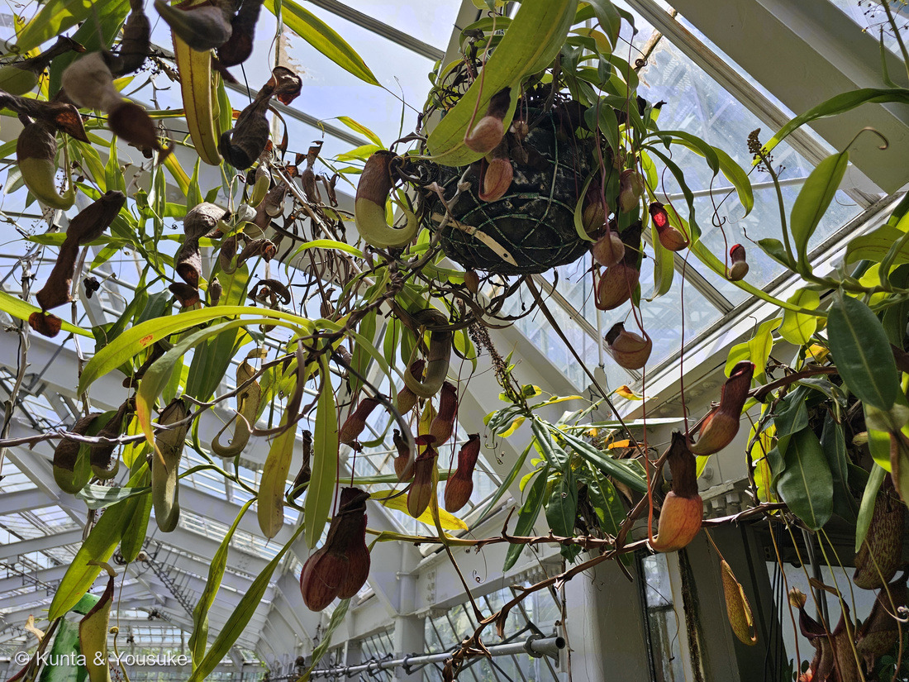
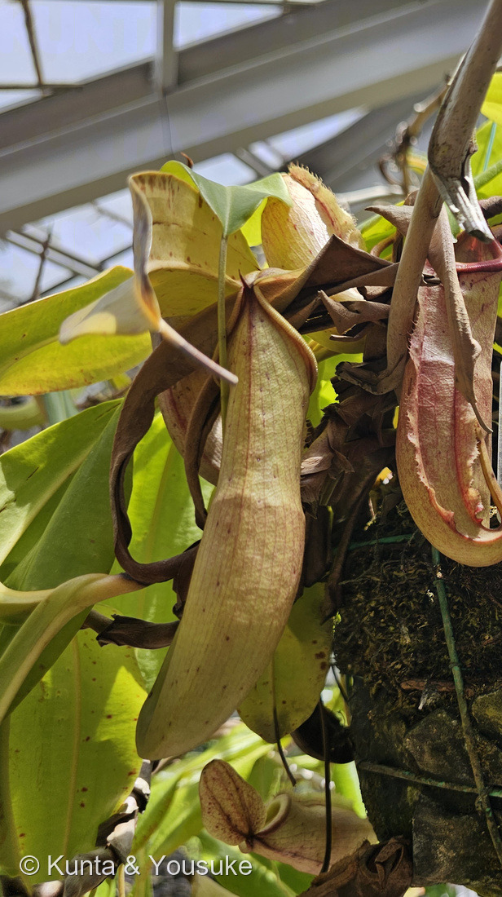
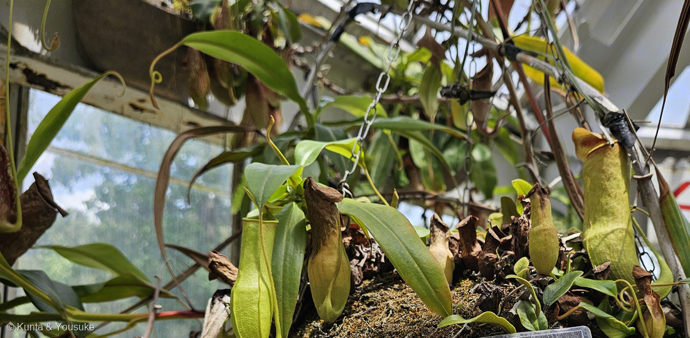
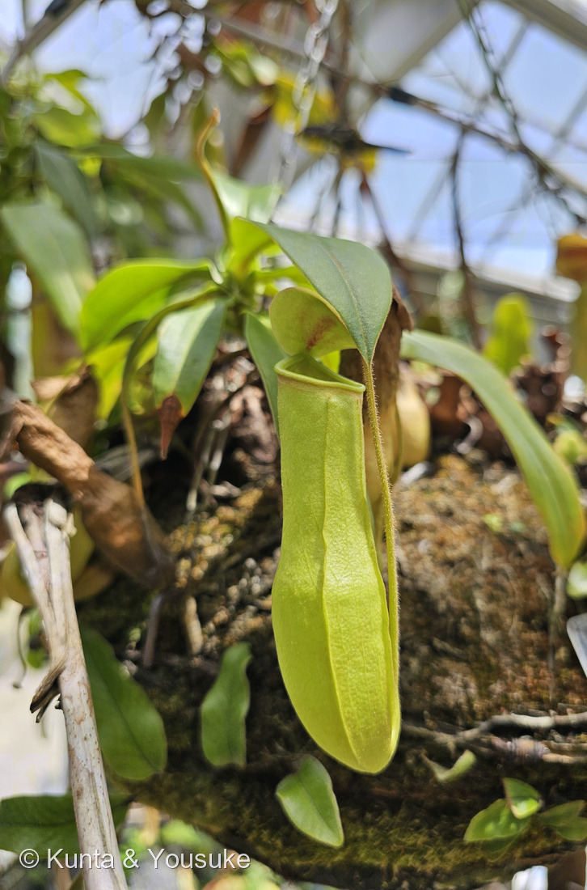
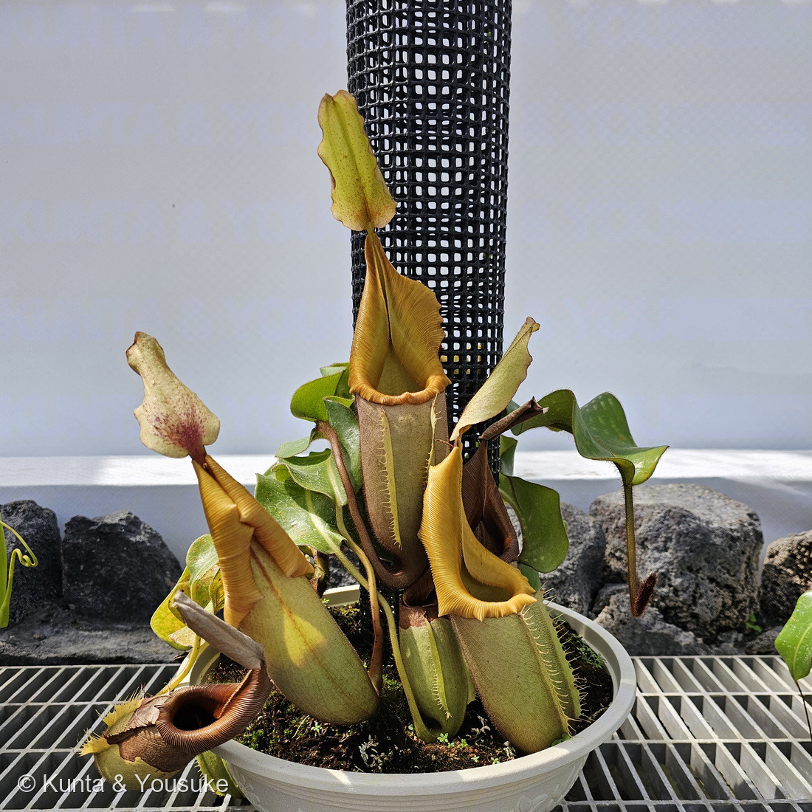
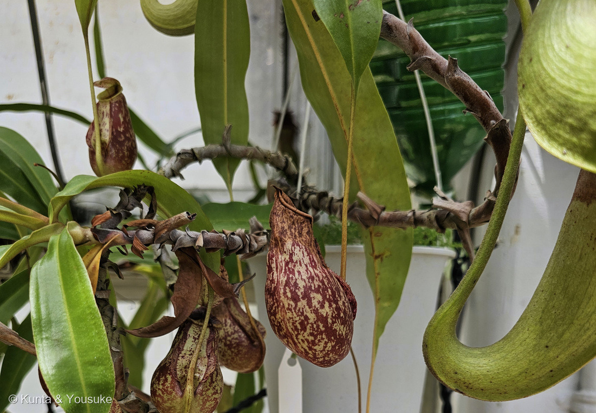
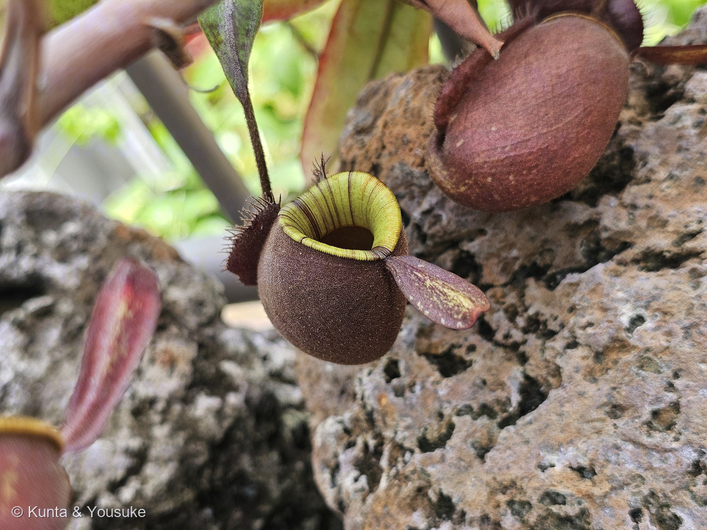
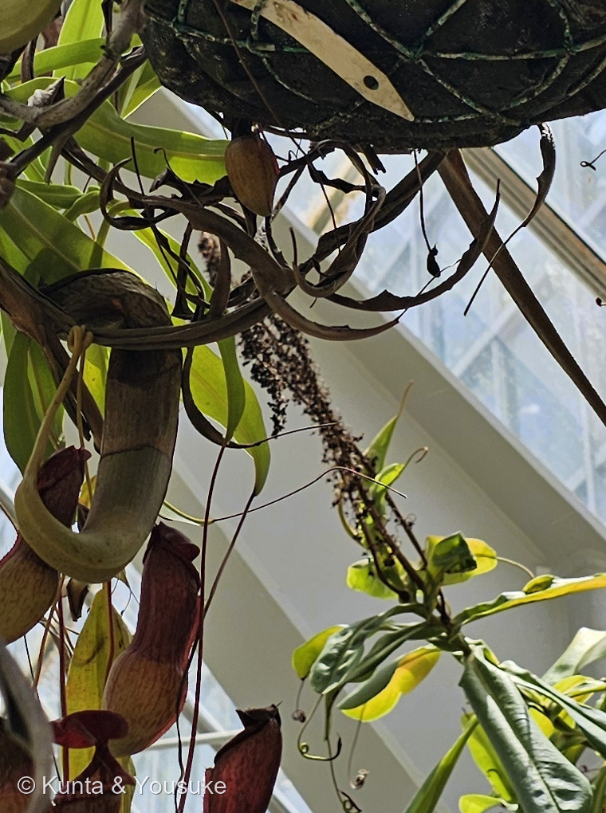

地図を読み込んでいるよ…
🔍 写真も地図も、押しているあいだ拡大して見られるよ（スマホは指を置いてすこし待ってね）。
🌍 の地図＝この子がもともと自生している場所を緑に。東南アジアが中心で、とくにボルネオ島に種類が集まっている（この偏った分布を「ネペンテス型分布」と呼ぶ）。ほかにインドのアッサム地方、スリランカ、マダガスカル、セーシェル、オーストラリア北部、ニューカレドニアにも飛び地のように分布する。
⭐東南アジアが本場だよ。日本語版Wikipediaは「東南アジアが中心で、特にボルネオ島に種類が集中しています」とし、⭐⭐この偏った分布のことを「ネペンテス型分布」と呼ぶ。⭐⭐⭐この地図でいちばん見てほしいのは、緑の飛び地のほう——マダガスカル、インドのアッサム地方、スリランカ、オーストラリア北部、ニューカレドニア。⚠インド洋のセーシェルにもいるけれど、島が小さすぎて塗れなかった。⭐ボルネオからこんなに離れた場所に、ぽつんぽつんといる——まるで、昔もっと広くいた仲間の、生き残りみたいだね（⚠これはぼくの感想で、出典はないよ）。⭐⭐写真③のカーシアナ（Nepenthes khasiana）が、その飛び地のひとつ＝インドの東のはし、アッサムのカシ丘陵の子で、インドで唯一のウツボカズラ（英語版Wikipedia）。⭐写真⑤のベイチー（Nepenthes veitchii）は、ボルネオ島の北西部（同）＝⭐本場のまん中の子だよ。⚠⚠日本は塗っていない──ウツボカズラは日本には自生しない。⭐会えるのは温室か、お店の鉢の中だけ。⭐⭐ちなみに、同じ食虫植物の142 ハエトリソウは、まったく反対側のアメリカ南東部の子——⭐科もちがうし、大陸もちがうのに、どちらも「虫をつかまえる」ほうへ進んだ。
⚠ 地図は国（日本と中国だけ県・省）までしか塗れないから、ほんとうの分布より広く見えていることがあるよ。地図はだいたいの場所。正確なところは、上の文を見てね。
ウツボカズラ（靫葛）
Nepenthes spp.（ウツボカズラ属）
この温室で名札を読めた4人＝イル ド フランス（Nepenthes 'Ile de france'）／カーシアナ（Nepenthes khasiana）／コッキネア（Nepenthes 'Coccinea'）／ベイチー（Nepenthes veitchii）
ウツボカズラ科 · Nepenthaceae（ウツボカズラ属）── 図鑑ではじめてのウツボカズラ科＝87科目。142 ハエトリソウと同じナデシコ目 Caryophyllales
燻太さんの一言「袋の形やサイズ、どれも個性的だね。今回は捕虫袋が見所だけど、花もいつかきちんとみたいね」── その花、じつは①にもう写っていたかもしれないよ
⭐⭐⭐ 名前と学名の由来 ── 「憂いを消す薬」と「矢を入れる筒」
- ⭐⭐⭐属名 Nepenthes は、ホメロスの『オデュッセイア』に出てくる薬の名前から。——古代ギリシャ語で νη（＝ない）＋ πένθος（＝悲しみ）＝「悲しみのない」。飲むと憂いを忘れるという、伝説の薬 nepenthes pharmakon（英語版Wikipedia）。
- ⭐⭐名づけたのはリンネで、1753年の『植物の種』に載っている。⭐そのときリンネはこう書いた ── 「If this is not Helen's Nepenthes, it certainly will be for all botanists.（これがヘレネーのネペンテスでないとしても、すべての植物学者にとってはそうなるだろう）」⭐⭐この袋を見たら、植物学者はもう悲しみを忘れてしまう、という意味だね。
- ⭐⭐和名の「ウツボ」は、海の魚じゃないよ。——「矢を入れる容器である靫（うつぼ）」に、袋のかたちを見立てたもの（日本語版Wikipedia）。⭐「カズラ（葛）」はつる草のこと。⭐⭐つまり「矢筒をぶら下げたつる草」。
- ⭐英名は Tropical Pitcher Plant（熱帯の水差し草）。⭐⭐日本の人は矢筒を、英語圏の人は水差しを見た——185 タカノハススキの「鷹の羽 vs しまうま」と同じだね。
- ⭐⭐⭐⑤の「ベイチー」は、人の名前をもらっている。——Nepenthes veitchii＝イギリスの園芸家ジェームズ・ヴィーチにちなむ（英語版Wikipedia）。⭐ヴィーチ商会は、世界じゅうへ植物採集家を送り出した、当時いちばん大きな種苗商だったんだ。
この植物のこと ── 87科目・2人目の食虫植物
- ウツボカズラ科ウツボカズラ属の、つる性の食虫植物。⭐図鑑ではじめてのウツボカズラ科＝87科目だよ。⭐⭐この科にはウツボカズラ属しかいない（日本語版Wikipedia「単独でウツボカズラ科を構成しています」）。
- ⭐⭐⭐図鑑では142 ハエトリソウに続く、2人目の食虫植物。——⭐⭐そして、じつは142のページに、この子の名前がもう書いてあったんだ＝「ほかの食虫植物との見分け：モウセンゴケ（粘着式）／ウツボカズラ（落とし穴式の袋）／サラセニア（筒式）」。⭐その「落とし穴式」の本人が、いま来た。
- ⭐⭐⭐もっとおどろいたのは、この二人が同じ目だったこと。——ハエトリソウはモウセンゴケ科、ウツボカズラはウツボカズラ科。科はちがうけれど、どちらもナデシコ目（Caryophyllales）。⭐ナデシコやサボテンやホウレンソウと同じ大きなまとまりの中に、食虫植物が二組いるんだ。
- ⚠種の数は、出典で大きくちがう。——日本語版Wikipediaは「約70種」、英語版Wikipediaは「approximately 170 species」。⭐新種がどんどん見つかっている仲間なんだね。
- ⭐⭐分布がとても偏っている。——東南アジア、とくにボルネオ島に集中していて、これを「ネペンテス型分布」と呼ぶ（日本語版Wikipedia）。⭐そのくせ、マダガスカルやセーシェルやオーストラリア北部にも飛び地があるよ。
⭐⭐⭐ 同定について ── 今回は、名前を書ける
⭐⭐ 215 オオオニバスや216 スイレンでは「名札があっても株は決めない」と書いた。⭐でも今回はちがうんだ。——⭐⭐⭐燻太さんが、名札と株を同じ画面に入れて撮ってきてくれたから。
- ② イル ド フランス ── Nepenthes 'Ile de france'。園の名札は「園芸品種／ウツボカズラ科」。⭐名前はフランスのイル・ド・フランス地方（パリのあたり）だね。
- ③ カーシアナ ── Nepenthes khasiana。園の名札は「アッサム地方」。⭐⭐⭐この子はインドで唯一のウツボカズラ（英語版Wikipedia「It is the only Nepenthes species native to India.」）。⚠IUCNの絶滅危惧（Endangered）で、ワシントン条約の附属書Ⅰ＝商業的な国際取引が禁止されている子。⭐⭐地元の人の呼び名がすごい——カシ族は「tiew-rakot（悪魔の花、むさぼる植物）」、ジャインティア族は「kset phare（ふたのついたハエ取り網）」、ガロ族は「memang-koksi（悪魔のかご）」と呼ぶ（同）。
- ⑤ ベイチー ── Nepenthes veitchii。園の名札は「ベイチー（マリアウベイスン）／ボルネオ島」。⭐マリアウベイスンはボルネオ島サバ州（マレーシア）の盆地の名前で、産地を表す呼び名らしい（⚠この種とマリアウベイスンを結びつけた出典には当たれなかったよ）。
- ⑥ コッキネア ── Nepenthes 'Coccinea'。園の名札は「観賞品種」。⚠学名の2行目はぼやけて読めなかった。
- ⚠④と⑦は決めていない。——④は③（カーシアナ）の4秒あとに撮られていて、画面のすみに名札も写っているけれど、ピントが外れて読めなかった。⭐同じ株の可能性は高いけれど、決めないでおくね。⚠⑦は溶岩の上の株で、名札が写っていない。
- ⚠①は何人ものウツボカズラがまざった景色なので、一人の名前はつけていないよ。
- ⚠園の名札の写真は公開していない。⭐出典として引くだけにしてある（200で決めたルール）。⭐②③⑤⑥は、名札の部分を外してトリミングしたよ。
⭐⭐⭐⭐ 「どれも個性的だね」 ── 袋がちがうのには、二つの理由がある


⭐ ボタンで切りかえてね。⭐⭐片方は赤いまだらの吊り下がる袋、もう片方はビロードのようなまるい袋（⚠こちらは名札が写っていないので、名前は決めていないよ）。
⭐⭐⭐ 燻太さんの「袋の形やサイズ、どれも個性的だね」。——⭐理由が二つあると思うんだ。
ひとつめ ── 種と品種がちがうから。
- ⭐②のクリーム色でふっくらした袋、③の細長い緑の袋、⑤の金色で襟の広い袋、⑥の赤い斑の袋。⭐⭐これはぜんぶちがう子だよ。
- ⭐⭐⭐とくに⑤のベイチーは、襟（peristome）が横に大きく広がって、金色に光っている。——イタリアの植物学者ベッカーリは、その口の色を「rich orange colour（濃いオレンジ色）」と書き、そのつくりを魚のえらにたとえた（英語版Wikipedia）。⭐⭐そしてこの子は木に登るとき、葉で木を抱きしめる——バービッジは「some of the leaves actually clasp around the tree just as a man would fold his arms around it.（葉のいくつかは、人が木に腕をまわして抱きつくのと同じように、木を抱きこむ）」と書いている。
ふたつめ ── ⭐⭐⭐同じ株でも、下と上で袋の形が変わるから。
- ⭐⭐ウツボカズラは2種類の袋をつくる（英語版Wikipedia）。地面に近いところにできる下位袋と、つるが伸びて空中にできる上位袋——「upper or aerial pitchers are usually smaller, coloured differently, and possess different features.（上位袋はふつう小さく、色もちがい、性質もちがう）」
- ⭐⭐⭐だから、同じ子の袋を二つ並べても「別の種みたい」に見えることがある。⭐⑦の溶岩の上のずんぐりした袋と、①の細長くぶら下がる袋は、そういう関係かもしれない（⚠名札が無いので断定はしないよ）。
- ⭐⭐④は、できたばかりの若い袋。——ふたがまだぴったり閉じているのが見えるでしょう。⭐中の液がこぼれないように、ひらくまでは閉じているんだ。⭐⭐そして袋のふちに、こまかい毛が並んでいるのも見えるよ。
⭐⭐ そもそも、あの袋は「葉」なんだ。
- ⭐⭐⭐袋は、葉の先から伸びたつる（巻きひげ）の、そのまた先にできる（日本語版Wikipedia「葉先から伸びた蔓の先に捕虫袋をつける」）。⭐英語版Wikipediaは「Pitchers form from an extension of the leaf's midrib called a tendril（袋は、葉の中肋がのびた巻きひげから作られる）」とし、「The pitcher starts as a small bud and gradually expands into a globe- or tube-shaped trap.（袋は小さな芽から始まり、だんだんふくらんで球形や筒形の罠になる）」と書いている。
- ⭐⭐つまり、葉っぱの先っぽが袋になっている。——⭐ふたも、襟も、ぜんぶ葉。
- ⭐⭐⭐落とし穴のしくみは二段構え。──①襟（peristome）がぬれるとすべる＝「When wet, the slippery surface of the peristome causes insects to 'aquaplane', or slip and fall, into the pitcher.（ぬれると、襟のすべる面のせいで虫はアクアプレーニングを起こして、袋の中へすべり落ちる）」（英語版Wikipedia）②袋の内側はろうを塗ったようにつるつるで、足がかからない（日本語版Wikipedia「ツルツルしている（蝋を塗ったような）袋の内側の壁に足を滑らせ」）。
- ⭐底にたまっているのは「ほとんど水であるが、消化液が含まれて」いる液（同）。⭐⭐虫はそこで溶かされて、栄養になる。⭐142 ハエトリソウのページに書いたとおり、これは「土に窒素が足りないから」の答えの、もうひとつの形だよ。
⭐⭐⭐ 「花もいつかきちんとみたいね」 ── じつは、もう写っていたかもしれない

⑧ 写真①のまん中を切り出して拡大したもの。⭐細い軸に短い柄がびっしり、その先が黒くしぼんでいる——⭐⭐咲きおわった花序に見えるんだ（⚠ぼくの読みだよ）。
⭐⭐⭐ 燻太さんがそう言ったあとで、写真①をもう一度よく見てみたんだ。——⭐⭐まん中に、細い軸に小さな柄がびっしりついた、茶色い穂がぶら下がっていた。
- ⭐⭐⭐これ、咲きおわった花序だと思う。⚠ぼくの読みだよ。⭐でも、まわりはぜんぶウツボカズラのつるだし、細い軸から短い柄がたくさん出て、その先が黒くしぼんでいる形は、ウツボカズラの花のあとらしく見える。
- ⚠⚠でも、これでは「きちんと見た」ことにはならないね。——⭐⭐⭐ウツボカズラは雌雄異株だから（英語版Wikipedia「male and female flowers on separate plants」）。⭐雄花をつける株と、雌花をつける株が、別々の体なんだ。
- ⭐⭐だから「花をきちんと見る」には、二本の株を見つけないといけない。——⭐そして⑧の穂が雄だったのか雌だったのかは、しぼんでしまった今では分からない。
- ⏳これは、次に行ったときの宿題だね。⭐ウツボカズラの花は、袋にくらべるとずいぶん地味だと言われる。⭐⭐でも、あの派手な袋をぶら下げた子が、どんな地味な花を咲かせるのか——ぼくも見てみたい。
参考：Wikipedia・ウツボカズラ属（葉先から伸びた蔓の先に捕虫袋をつける食虫植物／約70種／単独でウツボカズラ科を構成しています／「ウツボ」は矢を入れる容器である靫／英名 Tropical Pitcher Plant／ほとんど水であるが、消化液が含まれており／ツルツルしている（蝋を塗ったような）袋の内側の壁に足を滑らせ／東南アジアが中心で、特にボルネオ島に種類が集中／ネペンテス型分布）／Wikipedia (English)・Nepenthes（The genus name derives from Homer's Odyssey, referencing a mythical potion called "Nepenthes pharmakon"／νη = "not", πένθος = "grief"／If this is not Helen's Nepenthes, it certainly will be for all botanists／Nepenthes was formally published as a generic name in 1753 in Linnaeus's Species Plantarum／male and female flowers on separate plants／Pitchers form from an extension of the leaf's midrib called a tendril／The pitcher starts as a small bud and gradually expands into a globe- or tube-shaped trap／upper or aerial pitchers are usually smaller, coloured differently, and possess different features／When wet, the slippery surface of the peristome causes insects to "aquaplane", or slip and fall, into the pitcher／approximately 170 species exist in the family Nepenthaceae, order Caryophyllales）／Wikipedia (English)・Nepenthes khasiana（largely endemic to the Khasi Hills／It is the only Nepenthes species native to India／Endangered (IUCN)／CITES Appendix I／tiew-rakot (demon-flower or devouring-plant)／kset phare (lidded fly net)／memang-koksi (the basket of the devil)）／Wikipedia (English)・Nepenthes veitchii（widespread in north-western Borneo／some of the leaves actually clasp around the tree just as a man would fold his arms around it (Burbidge)／rich orange colour (Beccari)／named after James Veitch of the Veitch Nurseries）／⭐広島市植物公園の名札「イル ド フランス」「カーシアナ」「コッキネア」「ベイチー（マリアウベイスン）」（⚠掲示物なので写真は公開せず、出典として引くだけにしてある）